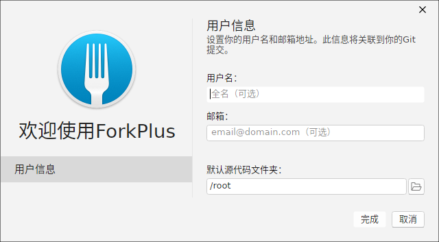
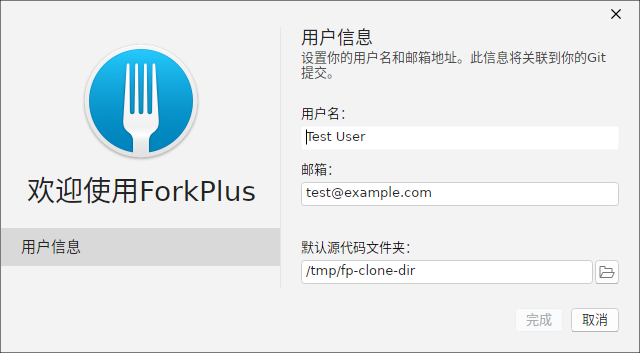
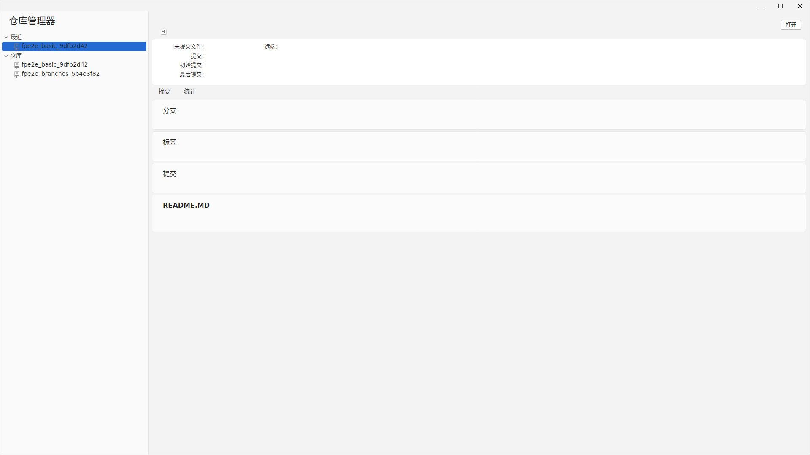
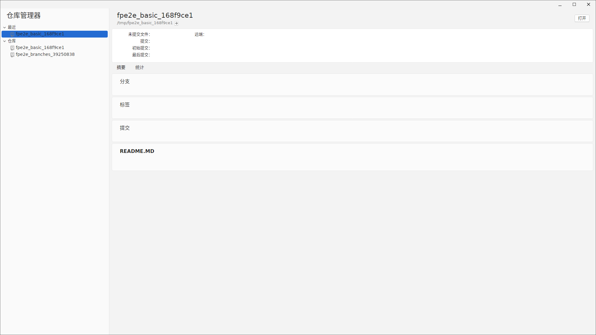
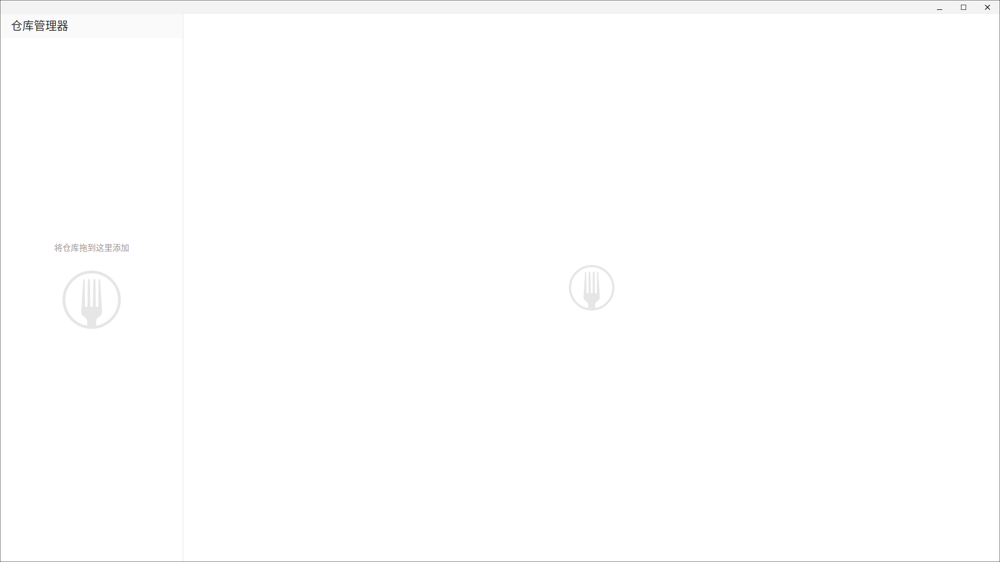
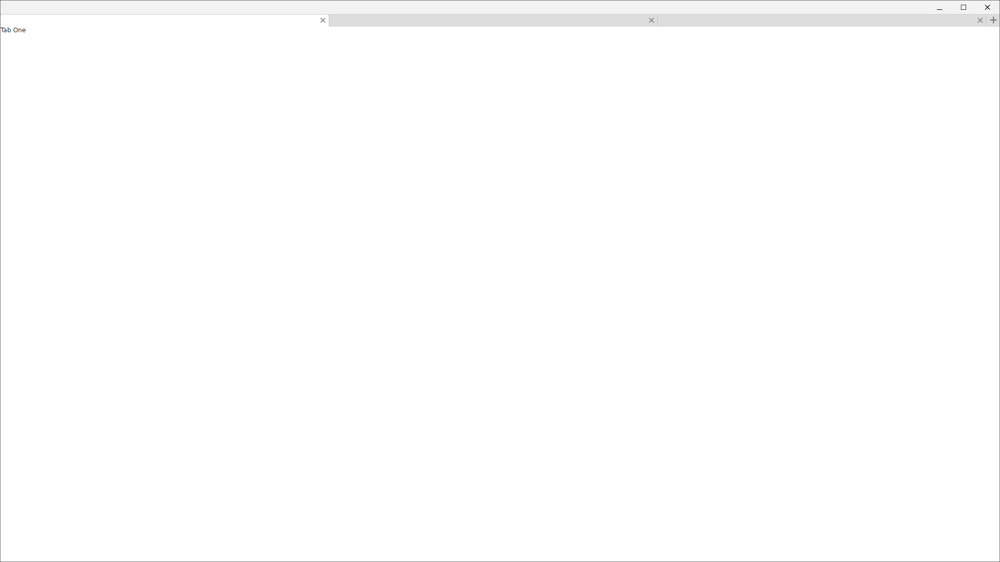
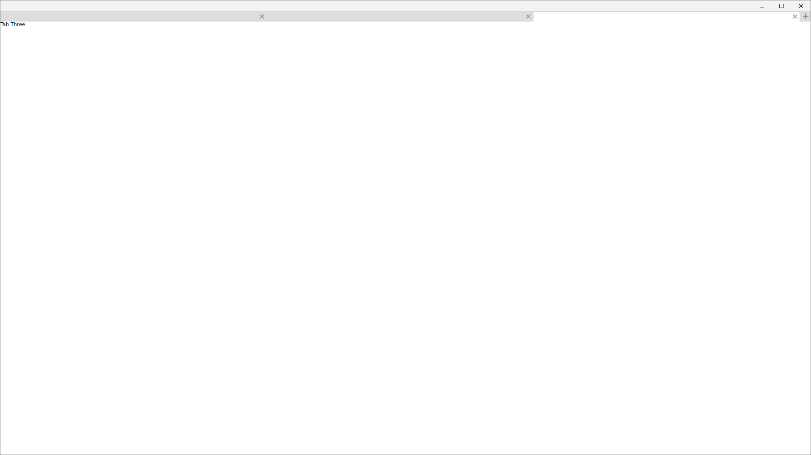

欢迎窗口：首次启动的用户信息设置
首次运行 ForkPlus 时会打开欢迎窗口。左侧为设置表单的导航步骤，输入的用户名与邮箱将写入本地 Git 全局配置，并关联到你之后创建的所有提交。

表单包含三个字段：
- 用户名：对应 Git 的
user.name，将出现在你创建的每条提交的作者信息中（全名可选）。 - 邮箱：对应 Git 的
user.email，用于身份关联（邮箱格式可选校验）。 - 默认源代码文件夹：克隆仓库时的默认落地目录，可点击右侧文件夹按钮选择。

提示：用户信息在文本变化时会即时写入全局 Git 配置；填写完成后点击右下角「完成」进入主界面。
仓库管理器：最近仓库与仓库分组
仓库管理器（Repository Manager）集中展示本机可用的仓库。它会把仓库按「最近」与「仓库库分组」两个维度组织起来，方便快速切换和打开。

选中某个仓库
在列表中单击某个仓库后，该项会高亮显示，作为打开前的确认（同时展示仓库路径等元信息）。

空态回退视图
当仓库列表为空时，仓库管理器会自动回退到引导视图，引导用户「克隆」「新建」或「添加」一个仓库。

多标签页
ForkPlus 采用多标签页组织多个打开的仓库与视图。每个标签页顶部为可关闭的标签项，当前活动的标签高亮显示。

点击任意标签即可切换活动仓库；切换到最后一个标签时，界面会随之更新为对应仓库的内容。

小贴士：你可以随时用工具栏或菜单打开、新建、克隆仓库，ForkPlus 会为每个仓库自动建立标签页；空闲标签可点右上角 × 关闭。